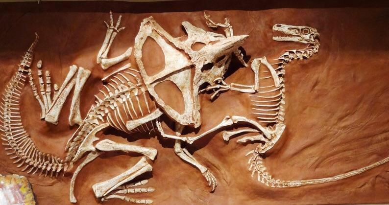
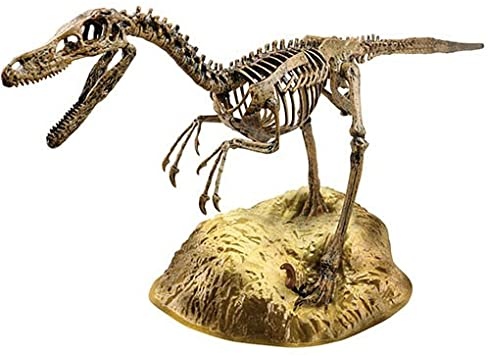

Die Velociraptors waren nicht höher als 1 Meter und lang 2 Meter.
Der kleine Räuber war flink und schnell,er lebte in der Kreidezeit mit dem Protozeratops
(einer seiner Beuten, aber gefährlich zu jagen ein mal hat ein Velociraptor einen Protozeratops gejagt und sei sind beide gestorben)

Die Zähne waren maximal 2.5 cm , der velociraptor hatte 50 nach hinten gebogene Zähne und an den hinter pfoten
hat der velo eine 9 cm lange Sichelkralle, mit der sich der velo sich an der Beute fest krallt
